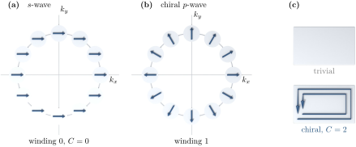

Advanced Quantum Materials 2027 · All lectures · Lecture notes
Session 5. Superconductivity, Nambu Representation and Majorana Physics
5.14 Same gap and different topology in trivial s-wave and chiral p-wave pairing
This is the central point of the whole session. Two superconducting gaps can have completely identical spectral properties, where both fully gap the Fermi surface with, for example, the same minimum gap, and still be topologically different. Let us compare plain s-wave pairing, \(\Delta(\mathbf k) = \Delta_0\), with chiral p-wave pairing,
\[\Delta_{p+ip}(\mathbf k) = \Delta_0\left(\sin k_x + i \sin k_y\right), \tag{5.15}\]
which is an odd-parity, spin-triplet order, in agreement with (5.12) since \(\Delta_{p+ip}(-\mathbf k) = -\Delta_{p+ip}(\mathbf k)\), and which winds once around the origin of the complex plane as \(\mathbf k\) goes around the Fermi surface. Both (5.9) with \(\Delta_0\) and (5.9) with \(\Delta_{p+ip}\) can fully gap the same Fermi surface, so a measurement of the bulk gap alone cannot distinguish them. However, in the same way as for the Chern-number classification of gapped bands in the topological-band-structure session, we can compute the Chern number of the occupied BdG bands for each case, and the two results are completely different. The trivial s-wave state has Chern number \(0\), while the chiral p-wave state has Chern number \(\pm 2\), where the sign is set by the chirality, \(p_x + ip_y\) or \(p_x - ip_y\).
What distinguishes them, as shown in figure 5.4, is the winding of the phase of \(\Delta(\mathbf k)\) when \(\mathbf k\) goes once around the Fermi surface. This phase is constant for s-wave, and it makes one full turn for \(p+ip\).
This has the consequence that we expect from the bulk-boundary correspondence. In a finite system, the s-wave superconductor stays gapped everywhere, both in the bulk and at the edge, in the same way as a trivial insulator with Chern number zero. The chiral p-wave superconductor, on the other hand, is gapped in the bulk but has gapless chiral edge modes. On one edge there are \(|C|\) branches that all propagate in the same direction, here two, one from each of the two identical spin blocks, and the opposite edge has the same number of branches that propagate in the opposite direction, as a state with Chern number \(\pm 2\) must have. So on a ribbon we see two sets of branches that propagate in opposite directions, but they are localized on opposite edges and do not share one edge. These edge modes turn out to be fractions of an electron in a very specific and exact sense, since they are Majorana modes, and the rest of this session is about what this means.

Notebook check-in: session5.ipynb, “Trivial and topological superconducting order parameters, bulk spectra” (Core), and “...edge spectra” (Core)
Build the s-wave and chiral p-wave BdG Hamiltonians next to each other, and check that their bulk spectra look similar, since both are gapped with a comparable gap size. Then move to a ribbon geometry and check that only the p-wave case has gapless chiral edge states, with branches of opposite velocity on the two edges of the ribbon, which is the distinction driven by the Chern number of section 5.14